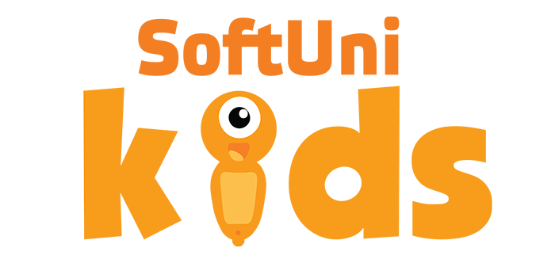

SoftUni Kids - следващата стъпка за IT образованието в България

Екипът от софтуерни инженери на СофтУни са свършили прекрасна работа през последните месеци, за да осигурят достъпно образование за най-малките. Досега през Софтуерния университет са преминали десетки хиляди хора, които са имали достъп до хиляди свободно достъпни образователни видеа, но СофтУни прави още една голяма стъпка, с която ще се опита да достигне до всички любопитни деца! Това е новата инициатива - SoftUni Kids! Тя ще даде шанс на всички малки ентусиасти на възраст от 5 до 12 години да се запознаят със света на програмирането и роботиката чрез редица невероятно забавни игри и приложения. MindHub е първата програма на SoftUni Kids, която използва иновативна игрова методология, за да предаде привидно сложните концепции зад писането на програмен код на учениците. Обучението ще използва цветни пъзели, бордови игри и управляеми роботи, за да развие логическото мислене на децата и да ги запознае с алгоритмичния подход към решаването на проблеми, свързани с програмирането. За да бъде преживяването интересно и лесно за усвояване, преподавателската дейност ще поемат екип от доказали се професионалисти, които с лекота могат да превърнат и най-монотонната теория в забавна и ангажираща игра.